프로그래밍과 문제해결
카렐, 리보그 세상
“수많은 프로그래머를 보아왔지만, 프로그래머는 모든 언어에 능숙하거나 어떤 언어에도 능숙하지 않거나 둘 중 하나다.
C 언어에 능숙한 프로그래머는 Erlang에도 능숙할 것이다 — 놀라도록 훌륭한 예측 변수다.
예외도 보아 왔지만, 한가지 언어에 능숙하는데 필요한 정신적인 기술이 다른 언어에도 관여하는 것으로 보인다.”“For what I’ve seen of programmers, they’re either good at all languages or good at none.
The guy who’s a good C programmer will be good at Erlang — it’s an incredibly good predictor.
I’ve seen exceptions to that but the mental skills necessary to be good at one language seem to cover to other languages.”
— Joe Armstrong, designer of the Erlang computer language
리보그, 카렐 모의 실험장치, 그리고 파이썬, 리보그 엄마 언어
여기서 사용되는 로봇 모의 실험장치, 리보그(Reeborg)는 캐나다 물리학자 안드레 로버지(André Roberge) 박사가 저작했으며 특별한 관심을 표명했고, 이번 수업과정에 기여했다; 오늘날 리보그에서 찾을 수 있는 많은 기능은 PCR 수업에서 나온 피드백 결과다. 로버지 박사에 대한 노고에 대한 감사의 말씀을 전하는 것은 적극 환영한다(andre.roberge@gmail.com).
로봇 실험장치는 파이썬에서 돌아가고, 파이썬은 학교, 연구소, 산업계에서 폭넓게 사용되는 가장 인기있는 컴퓨터 언어다. 특히, 쉽고, 명료성과 가독성이 좋기 때문에 첫 컴퓨터 언어로 흔히 사용된다.
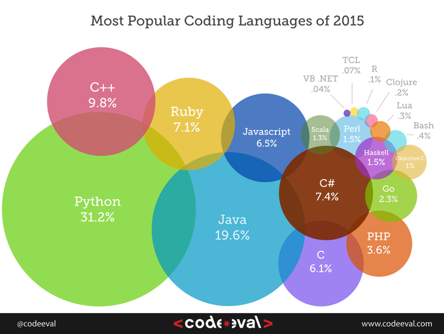
리보그 GUI
시작해서 첫번째 임무를 해결해 보자: 클릭해 본다.
먼저 인터페이스 각 부분을 식별해 본다:
카렐, 리보그 세상
- 이곳은 카렐이 살고 있는 세상으로, 격자로 되어 있다.
- 각 격자는 비어 있거나, 객체가 포함되어 있다.
- 카렐은 하나 혹은 그 이상 토큰을 집어들 수 있다.
- 임무를 올바르게 끝마치게 되면 ‘빈’ 토큰 상태가 된다.
- 카렐 목적지, 즉 ‘집(home)’ 정사각형이 목적지가 된다.
- 격자 사이, 즉 셀(cell) 사이에 벽이 있을 수 있다.
- 좌측 상단에, 카렐이 가방에 가지고 있는 토큰 갯수를 볼 수 있다.
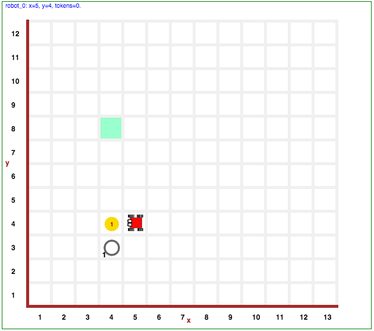
코드 편집기
- 코드 편집기에는
파이썬 코드탭과라이브러리탭이 있다. 파이썬 코드영역에만 프로그램 코드를 우선 작성한다.라이브러리영역은 작성된 프로그램이 사용한 함수를 담고 있다.- 작성한 프로그램은 30줄 이상 되면 안된다.
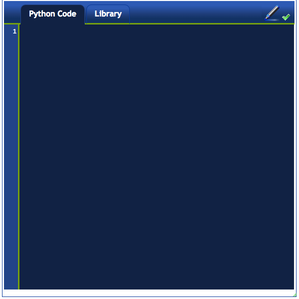
제어 버튼
왼쪽 상단 영역에, 다음 버튼이 왼쪽에서 오른쪽으로 위치해 있다:
- 실행 버튼: 프로그램을 실행한다.
- 스텝 버튼: 다음 명령어만 실행한다.
- 임시중지 버튼: 임시로 프로그램을 멈춘다.
- 정지 버튼: 세상을 새로 초기화하지 않고, 프로그램을 정지시킨다.
- 재감기 버튼: 프로그램을 정지시키고, 세상을 새로 초기화한다.
작업임무 해결하기
앞에서 살펴본 세상에 나온 작업임무를 해결할 것이다. 카렐은 노란색 토큰을 집어서, 바구니에 넣고 나서, 집으로 돌아온다. 이제 시작해보자.
주석
주석은 프로그램의 일부가 아닌 텍스트다; 컴퓨터가 아닌 프로그래머를 위한 정보가 담겨있다. 즉, 왼쪽 혹은 오른쪽에 페이지 여백에 쓴 메모같은 것이다. 파이썬에서, # 해쉬기호로 시작되는 어떤 텍스트도 주석이 된다.
다음 주석으로 시작하는 프로그램을 작성한다:
# 이번 작업임무는 토큰을 집어서, 바구니에 넣고 나서,
# 집으로 귀향하는 것이다.이제 프로그램을 실행한다 (즉, 실행 버튼을 클릭한다). 프로그램이 실행되고 나서 실패한다. 왜냐하면, 설사 프로그램이 적법하게 작성되었지만, 작업임무에 나온 어떤 목적도 달성하지 못했다. 즉, 바구니에 토큰이 없고, 녹색 정사각형에 로봇이 위치하고 있지 않는다.
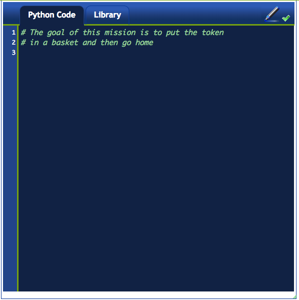
시스템 명령어
다음에 작업임무 수행에 자주 출몰하는 함수가 일부 나와있다.
- sound(True/False) : 음향효과를 켜고 끈다.
- think(n) : 백만분의 1초로 명령어 사이 지연설정한다. 250 ms 보다 짧게 하면 음향효과가 꺼진다.
- say(message) : 팝업 윈도우에 메시지를 뿌려준다.
- pause() : 스텝 혹은 재생 버튼을 누를 때까지 프로그램이 잠시 멈춘다.
상기 명령어를 다음 프로그램에 추가하자:
sound(True)
think(1000)
# 메인 프로그램
msg = "출발할 준비가 됐습니다. 계속 하려면, 재생 버튼을 눌러주세요."
say(msg)
pause()상기 프로그램은 다음 작업을 수행한다:
- 음향효과를 켠다.
- 다음 명령어가 실행될 때 1초 지연시간을 설정한다.
- 문자열을 변수
msg에 할당한다. say()함수로 화면에 메시지를 출력한다.- 잠시 프로그램을 멈춘다.
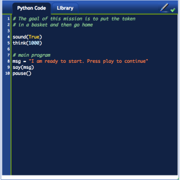
붙박이 내장 함수
작동명령(혹은 함수)이 로봇을 동작하게 한다. 카렐에는 4가지 내장 작동명령이 있다:
move() # 로봇 앞에 있는 셀로 이동한다.
turn_left() # (제자리에서) 좌측으로 90° 회전한다.
take() # 바닥에서 토큰을 하나 집어 가방에 넣는다.
put() # 토큰을 가방에서 빼서, 바닥에 내려놓는다.상기 명령어를 사용해서, 첫번째 작업임무를 완수한다. 즉, 토큰을 바구니에 넣는데, 다음 코드를 사용한다.
move() # 로봇 앞에 있는 셀로 이동한다.
take() # 바닥에서 토큰을 하나 집어 가방에 넣는다.
turn_left() # 여러분의 좌측이 아니라, 로봇이 좌측으로 회전한다.
move() # 바구니가 있는 셀 위에 선다.
put() # 토큰을 바닥에 내려놓는다.이번에 프로그램을 실행하면, 여전히 실패하지만, 토큰이 올바른 최종 지점에 놓여진 것을 나타낸다.
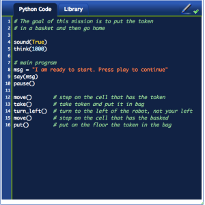
반복

repeat() 함수는 단일 명령어를 여러번 반복한다:
repeat(command, n ) # command 명령을 n 번 반복예를 들어, 카렐이 바구니에 토큰을 넣었다; 이제, 뒤로 돌아 집으로 귀향한다. 뒤로 돌려면, turn_left() 명령을 두번 수행하도록 하거나, repeat() 명령어를 사용해서 turn_left() 명령을 2회 반복시킨다.
요약하면, 다음과 같이 작성하는 대신에,
turn_left()
turn_left()다음과 같이 적성한다:
repeat(turn_left, 2) # 뒤돌아 선다.상기 코드 모두 동일한 작업을 수행하지만, 두번째 코드가 더 낫다. 이유는 동일한 작업을 더 명료하게 수행하기 때문이다. 다시 강조하면:
두번째 코드가 더 낫다. 왜냐하면 첫번째 코드보다 더 짧기 때문이 아니라, 더 명확하기 때문이다.
라이브러리
카렐을 켰을 때, 카렐은 명령어 4개만 알고 있지만, 카렐이 이미 알고 있는 명령어 4개에 기초해서 새로운 명령어를 가르칠 수 있따. 라이브러리에는 추가적인 명령어가 3개 더 있다:
- left()
- right()
- turn_around()
특히, turn_around() 명령어는 방금전에 작성한 것을 정확하게 수행한다: repeat()을 사용해서 로봇을 뒤돌아서게 한다. 따라서, 코드를 반복하는 대신에, 라이브러리에 이미 작성된 명령어만 사용한다. 프로그램 상단에 다음처럼 한줄을 추가하면 라이브러리에 포함된 명령어를 사용하도록 파이썬에게 일러준다.
from my_lib import *상기 명령어는 my_lib 에 있는 모든 것을 프로그램이 사용할 수 있도록 한다는 의미다.
따라서, 다음과 같이 하면 라이브러리를 사용하도록 프로그램이 변경된다:
from my_lib import *
....
turn_around()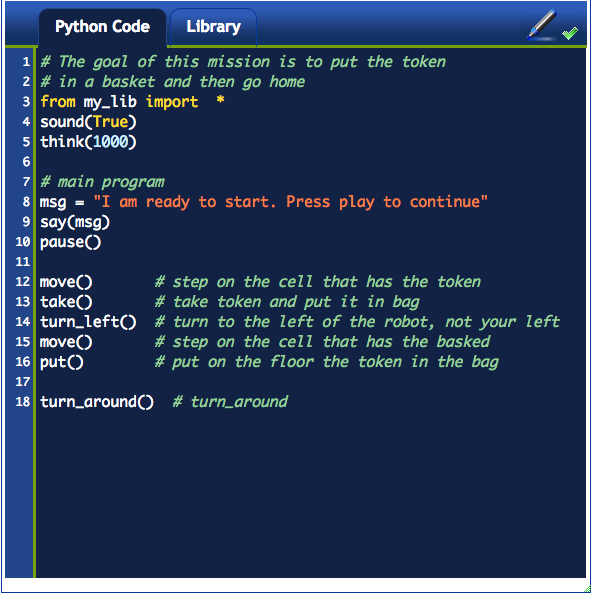
3학년 - 거의 도착했습니다.
뭐라고? 훈련 작업임무가 완벽하게 완수된 것이 아니다: 카렐은 정사각형 집으로 귀향해야만 된다. 작업임무를 완수해서, 토큰을 바구니에 넣은 후에 집에서 편안한 휴식을 갖도록 한다.
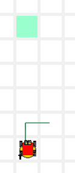
해답: 보여주기
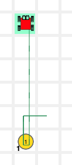
4학년 - 병아리 12 마리
아!… 병아리가 닭장을 뛰쳐나갔다. 빨리 병아리를 잡어서 닭장에 몰아 넣고, 카렐 집으로 귀향한다.
해답: 보여주기
| 현재 상황 | 집에 도착한 후 |
|---|---|
| 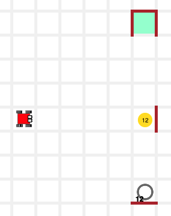 | 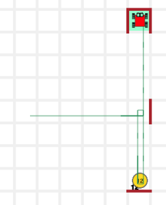 |
5학년/6학년
5학년과 6학년에는 작업임무가 없다. 왜냐하면, 이미 상당한 학습량을 다루었기 때문이다. 4학년 작업임무를 수행할 수 있다면, 완벽하게 진도를 따라나가고 있다. 축하합니다.